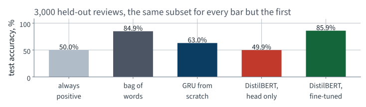
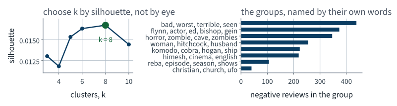
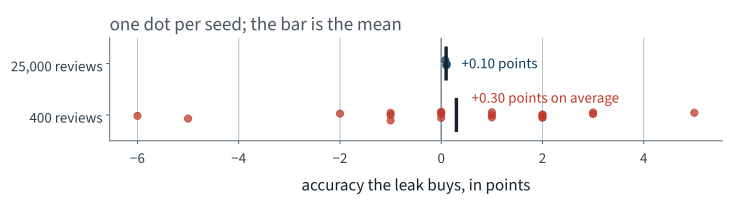
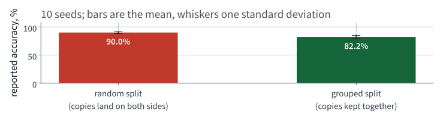

IMDb
Lecture 18 Géron Ch. 14–15
Applications of Machine Learning
BSc Mathematics of Artificial Intelligence · Third year
Lecture 17 classified IMDb reviews: words and subword tokens, an embedding table, and a bidirectional GRU trained on logits with cross-entropy — which lost to a bag-of-words anchor. However well it is trained, a recurrent model carries three limits:
Every position needs a summary of the whole sequence, weighted by relevance — and relevance has to be learned, not designed.
Note what is already gone: there is no recurrence in that expression, so nothing forces the positions to be computed in order.
Take $\mathbf{q}$ and $\mathbf{k}$ to have independent components with mean 0 and variance 1. Then
examinable Derive the variance of the score and state what the division fixes.
Recurrence got order for free, because it processed the sequence in order. Attention has to be told: add a position-dependent vector to each embedding before the first layer.
A transformer block is attention plus a small feed-forward network, each wrapped the same way:
A decoder generating text must not look at what it has not written yet. So set $s_{ij} = -\infty$ for $j > i$ before the softmax.
$e^{-\infty} = 0$, so those positions get exactly zero weight and contribute nothing — and, crucially, no gradient either.
This is Lecture 15’s causality condition again, enforced in the architecture rather than in the data split. An unmasked decoder is a model that has read the answer.
def attention(Q, K, V, mask=None):
d_k = Q.shape[-1]
scores = Q @ K.transpose(-2, -1) / math.sqrt(d_k) # the derivation
if mask is not None:
scores = scores.masked_fill(mask, float("-inf"))
w = scores.softmax(dim=-1)
return w @ V, w
Six lines, and every one of them is a step of the derivation. The rest of a transformer — the residuals, the feed-forward, the normalisation — is arrangement around this function.
Which is worth saying plainly: the architecture that changed the field is, at its centre, a similarity, a softmax and a weighted average.
$\mathbf{Q}\mathbf{K}^{\mathsf T}$ is $T \times T$. At $T = 512$ that is 262,144 scores; at $T = 8{,}192$ it is 67 million.
Note which of those changes the mathematics and which does not. The third is an engineering result, and it moved the practical limit further than either of the first two.
Attention weights are easy to plot and easy to over-read.
Useful for forming a hypothesis; not evidence on its own. The test is the same as everywhere else in this course — remove the thing and measure whether the number moves.
| Property | Value |
|---|---|
| Parameters | 66,955,010 |
| Vocabulary — the same one we used last lecture | 30,522 |
| Embedding width | 768 |
| Pretraining task | predict masked words |
Last lecture we took 30,522 × 768 numbers out of this model and threw the rest away. The rest is where the language is.
Measured on one run of this lecture’s notebook; hardware, library versions and random seeds can make a re-run differ slightly.
from transformers import AutoModelForSequenceClassification
model = AutoModelForSequenceClassification.from_pretrained(
"distilbert-base-uncased", num_labels=2)
# every weight is pretrained EXCEPT the classification head, which is random
opt = torch.optim.AdamW(model.parameters(), lr=2e-5)
lossf = nn.CrossEntropyLoss() # logits in, as always
Run the same backbone with its untrained head and no fine-tuning at all:
| Model | Test accuracy |
|---|---|
| Pretrained body, random head, no training | 49.9% |
| Always one class | 50.0% |
Measured on 3,000 test reviews sampled at random, 50.1% of them positive. Note it is no better than the majority class: an untrained head is an arbitrary hyperplane, and which side it puts each class on is a coin toss. The pretraining on its own predicts nothing about sentiment, because nothing has told it what the two output units mean.
Everything that follows is what one pass of fine-tuning does with a representation it did not have to build.
Measured on one run of this lecture’s notebook; hardware, library versions and random seeds can make a re-run differ slightly.
| Setting | Value |
|---|---|
| Reviews used to fine-tune | 2,000 |
| Epochs | 1 |
| Batch size, learning rate | 16, 0.00002 |
| Training wall clock | 16 s |
| Test reviews scored, sampled at random | 3,000 |
Measured on an Apple MPS backend, in float32,
and sized so that the notebook runs on a free CPU. One pass, fixed in
advance: with more budget the number of epochs is a hyperparameter, chosen on
the validation split — never on the test set.
| Model | Test accuracy |
|---|---|
| Always one class | 50.0% |
| tf-idf + logistic regression, the same 2,000 reviews | 84.9% |
| GRU from scratch | 63.0% |
| DistilBERT, fine-tuned | 85.9% |
22.90 points over the model you built.
And only 1.00 points over a bag of words fitted on the same 2,000 labels — which is the second result of the afternoon, and the less comfortable one. Every row but the first is scored on the same 3,000 test reviews.
Measured on one run of this lecture’s notebook; hardware, library versions and random seeds can make a re-run differ slightly.

Four of the five bars are on the same 3,000 held-out reviews, with the same metric, computed by the same function.
| Model | Reviews misclassified, out of 3,000 |
|---|---|
| GRU from scratch | 1,109 |
| DistilBERT, fine-tuned | 422 |
62%
of the mistakes removed. Percentage points flatter a model near the top of the range; the error count is the number the desk actually cares about, because each one is a review someone has to fix by hand.
Measured on one run of this lecture’s notebook; hardware, library versions and random seeds can make a re-run differ slightly.
Measured here at one label budget: 2,000 reviews for each model, scored on the same 3,000 test reviews.
| Model, fitted on 2,000 labels | Test accuracy |
|---|---|
| tf-idf + logistic regression | 84.9% |
| DistilBERT, fine-tuned | 85.9% |
Pretraining is knowledge the labels do not have to supply. So the expectation is that its lead grows as labels get scarcer and shrinks as they arrive — and the situation every real feedback desk starts in is the scarce one.
This notebook measures one point on that curve, not the curve.
Measured on one run of this lecture’s notebook; hardware, library versions and random seeds can make a re-run differ slightly.
That is several fine-tunes, more than a free CPU runs inside a lecture. Until it is run, “the pretraining is worth thousands of labels” is a hypothesis — not yet the number to quote to whoever is paying for the annotation.
| Changed | Unchanged |
|---|---|
| the whole model, not just the table | the corpus, the split, the metric |
| attention instead of recurrence | the loss — still logits in |
| a much smaller learning rate | the training loop, line for line |
| one epoch instead of two | the evaluation function |
Every row on the right is a decision you do not have to re-make when the model changes. That is what the discipline of Part I bought.
The desk also wants “find me the ones like this one” and “what do people keep complaining about?”. Neither is classification; both start from one unit-length vector per review, so that a dot product is a cosine.
m = AutoModel.from_pretrained("sentence-transformers/all-MiniLM-L6-v2")
tk = AutoTokenizer.from_pretrained("sentence-transformers/all-MiniLM-L6-v2")
enc = tk(texts, truncation=True, max_length=256, padding=True,
return_tensors="pt")
out = m(**enc).last_hidden_state # (B, T, 384)
mask = enc["attention_mask"].unsqueeze(-1).float()
vec = (out * mask).sum(1) / mask.sum(1) # mean over REAL tokens
vec = torch.nn.functional.normalize(vec, dim=1) # onto the unit sphere
Line 8 is last lecture’s padding bug in its other
costume. Divide by out.shape[1] instead of by
mask.sum(1) and every short review is scaled toward zero.
sims = query_vec @ corpus_vecs.T # (1, N) cosine similarities
top = np.argsort(-sims[0])[:3]
2,000 negative reviews, embedded once, 384 dimensions each. No index, no training, no labels.
Measured on one run of this lecture’s notebook; hardware, library versions and random seeds can make a re-run differ slightly.
Query: “the acting was wooden and unconvincing”
Nearest by keyword overlap — tf-idf cosine 0.194:
“This film was sheer boredom from beginning to end. Ok, so i salute Boorman for raising the worldwide recognition of events in Burma, but that is all he achieves…”
Two different reviews, and neither opens with the query’s words. The scores are not comparable across the two methods — different spaces — and nothing here says which list is better: that takes labelled queries and a ranking metric, which is where the next lecture starts.
Measured on one run of this lecture’s notebook; hardware, library versions and random seeds can make a re-run differ slightly.
Cluster the 2,000 negative reviews in the same embedding space. This is Lecture 8, unchanged — k-means, and the choice of $k$ by silhouette rather than by eye.
for k in (3, 4, 5, 6, 8, 10):
km = KMeans(n_clusters=k, n_init=10, random_state=42).fit(V)
print(k, silhouette_score(V, km.labels_, sample_size=1500,
random_state=42))
The vectors are on the unit sphere, so Euclidean k-means and cosine k-means order the same points the same way.

The silhouette is low in absolute terms — complaint text does not fall into well-separated balls — and the largest group is still legible.
| Reviews | Terms most characteristic of the group |
|---|---|
| 438 | bad, worst, terrible, seen |
| 373 | flynn, actor, ed, bishop |
| 346 | horror, zombie, cave, zombies |
The terms are not the cluster centres. They are the words whose average tf-idf weight is highest inside the group relative to outside it — a group is named by what makes it different, not by what is common everywhere.
The second group is named by proper nouns — a handful of films reviewed many times. That is a topic, not a complaint: grouping finds what recurs, and deciding which recurrences the desk cares about is still a person’s job.
8 groups in total, chosen by a silhouette of 0.0167.
Measured on one run of this lecture’s notebook; hardware, library versions and random seeds can make a re-run differ slightly.
| They asked for | They get |
|---|---|
| a complaint flag | 85.9% accurate: 422 errors in 3,000 |
| “find me ones like this” | cosine search over 2,000 vectors |
| “what recurs” | 8 groups, each named by its own words |
Three deliverables, one pretrained representation, and one afternoon. None of the three required a labelled example of the thing being asked for except the first.
Measured on one run of this lecture’s notebook; hardware, library versions and random seeds can make a re-run differ slightly.
Stated like that, it is open in the same place as a scaler fitted before the split (Lecture 3), and this time the object being fitted is not a scaler. Read the code and find where the vectoriser is fitted, and on what.
vec = TfidfVectorizer(min_df=1, ngram_range=(1, 2))
X = vec.fit_transform(all_texts) # every document
y = all_labels
X_tr, X_te, y_tr, y_te = train_test_split(
X, y, test_size=0.25, random_state=42, stratify=y)
clf = LogisticRegression(max_iter=2000, C=4.0).fit(X_tr, y_tr)
print(f"accuracy {(clf.predict(X_te) == y_te).mean():.3f}")
It runs, it splits, it never fits the classifier on test rows, and it reports a plausible number. But line 2 fits the vectoriser on every document, the test rows included.
The same experiment at two corpus sizes, because the answer depends on the size and that is the lesson:
Leaky and honest are run on identical splits with identical seeds, so the difference is the leak and nothing else.

Read each row’s spread before its mean. On 25,000 reviews the leak is small and steady; on 400 the seeds fall on both sides of zero and the mean is lost inside that scatter — a null result.
A scaler fitted before the split (Lecture 3) raises no error and makes the score optimistic by an amount the code does not tell you. Lecture 10's per-batch mean was worth 0.15 accuracy points. Today’s vectoriser leak is worth nothing you can measure.
The same document on both sides of the split.
No pipeline protects you from this: every object is fitted correctly, on training rows only, and the test row is still one the model has memorised. On scraped or user-submitted text it is the normal case, not the pathological one — a resubmit button is enough.
norm = lambda s: " ".join(s.lower().split())
train_norm = set(norm(s) for s in train_x)
dupes = sum(1 for s in test_x if norm(s) in train_norm)

A corpus where three reviews in ten were submitted twice, and the same honest pipeline split two ways: at random over rows, and grouped by entry so every copy stays on one side. Nothing was fitted on the test set in either bar; the difference is entirely which rows the split separated.
| Failure | Diagnosed in | Measured cost |
|---|---|---|
| Scaler fitted before the split | Lecture 3 | an optimistic score, and no error |
| Accuracy under class imbalance | Lecture 3 | a useless model above 90% |
Missing zero_grad() | Lecture 10 | 66 points |
| Random split on a time series | Lecture 15 | an unreproducible score |
| Summarising at the padded last position | Lecture 17 | 11.85 points |
| Softmax before the loss | Lecture 17 | the wrong gradient, and no error |
| Vectoriser fitted before the split | today | 0.30 points — not distinguishable from zero |
| Duplicate documents across the split | today | 7.83 points |
Measured on one run of this lecture’s notebook; hardware, library versions and random seeds can make a re-run differ slightly.
Against the desk’s own criterion: 422 reviews out of the 3,000 scored are routed wrongly, and nobody sees them again. Whether that is acceptable depends on what happens to a missed complaint, and we have not asked.
The model is not the deliverable. The routing decision is.
Measured on one run of this lecture’s notebook; hardware, library versions and random seeds can make a re-run differ slightly.
lr=1e-3, the from-scratch model’s rate. The
loss rises within twenty steps and never recovers: a pretrained body is
destroyed in tens of steps, not thousands.
Measured on one run of this lecture’s notebook; hardware, library versions and random seeds can make a re-run differ slightly.
Not presented — for afterwards
five, in the style of the written paper
Solutions on Lecture 19’s deck.
Solutions on Lecture 19’s deck.
The five set at the end of Lecture 17
not part of this lecture
1. Swapping the embedding table moved validation accuracy from 64.4% (our words, random vectors) to 58.4% with…
So that the measurement says which change did the work: the tokenizer alone was worth −6.0 points, the tuned table +15.0. Frozen, the model stayed at chance, so the gain needs the 5,000 labels to adapt the pretrained vectors.
2. State the gradient of cross-entropy with respect to the logits for a one-hot target, and what each row of…
$\partial L/\partial \mathbf{z} = \mathbf{p} - \mathbf{y}$, prediction minus target; each row sums to zero.
Measured on one run of this lecture’s notebook; hardware, library versions and random seeds can make a re-run differ slightly.
3. A classifier's forward ends in a softmax, and its output is passed to nn.CrossEntropyLoss. State what happens…
Nothing raises and the model still trains, but the softmax is applied twice, so the gradient it trains on is not $\mathbf{p} - \mathbf{y}$. Return the logits and let the loss apply the softmax.
nn.CrossEntropyLoss applies the softmax itself, so it expects logits4. A padded batch is fed to a GRU without pack_padded_sequence. State what the returned state summarises for a…
The review followed by its padding: the state after the zeros, not after the last word. Pad the same review two different ways and require the logits not to move.
5. Enlarging a word vocabulary drives the share of unseen distinct test words down, but even the full…
A word vocabulary is closed and language is not. Subword tokenisation.
Lecture 19 · Lecture notes
The retrieval problem: a query, a corpus, a ranking — and why it is
not classification
BM25, built one correction at a time: term frequency, saturation, inverse
document frequency, length
Evaluating a ranking: precision@k, reciprocal rank, average precision, NDCG
Where the relevance judgements come from, on SciFact
Part V begins — beyond the textbook, and examinable